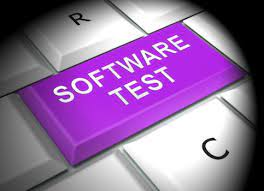
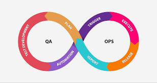

Inteligencia Artificial en Testing
La inteligencia artificial está revolucionando la manera en que se automatizan y ejecutan las pruebas, mejorando la detección de errores y optimizando los casos de prueba.
Explora las tecnologías emergentes que están transformando la industria del testing.
La inteligencia artificial está revolucionando la manera en que se automatizan y ejecutan las pruebas, mejorando la detección de errores y optimizando los casos de prueba.
La nube permite realizar pruebas a gran escala, permitiendo a los equipos realizar simulaciones masivas y pruebas en múltiples entornos de manera simultánea.

El enfoque de DevOps está integrando al QA en el ciclo de desarrollo, facilitando una entrega continua y pruebas constantes en cada etapa del pipeline.
La automatización está entrando en una nueva era donde la inteligencia artificial puede identificar automáticamente las áreas más propensas a errores, mejorando la precisión de las pruebas y optimizando el tiempo de ejecución.
Leer más